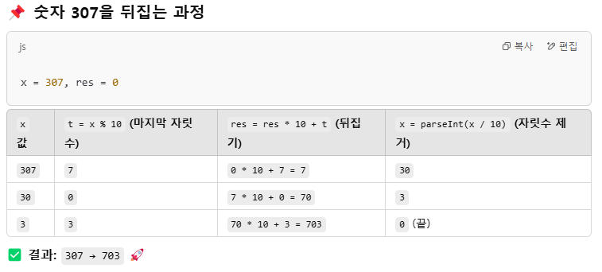

먼저 뒤집고, 뒤집은 수가 소수면 출력
ex. 307
t=x%10 / t-> x를 10으로 나눈 나머지값
res=res*10+t /
x=x/10 / x는 x를 10으로 나눈 몫
7 = 307%10
7 =0*10+7
30=307/10
--------------------------------------------
0=30%10
70=7*10+0
3=30/10
--------------------------------------------
3=3%10
703=70*10+3
0=3/10 끝
